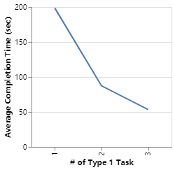

In response to Question 1, this graph shows the learning curve of users. The x axis measures how many times a volunteer has been performing the Type 1 task (the current one included). The y axis represents the average completion time of Type 1 tasks among all volunteers. We see that the interface is not trivially intuitive: volunteers were still getting more proficient when performing the same type of tasks in the third time. However, we admit that the data is also influenced by the familiarity to the task itself, and we have failed to come up with an idea to negate its effect.
Assignment 4: Evaluating Visualizations
Yufan Zheng — yfzheng@umd.edu
Resources
log/log_data.json: The collected data file
A2_writeup.md: The original A2 writeup
A3_writeup.md: The original A3 writeup
README.md: The A4 README file written for volunteers
A2/: A2 code
A3/: A3 code
A4/: all A4 code
Description of A3
Our A2 and A3 share the same user interface. Our A4 only added a small interaction interface for collecting users' responses for the study.
The data (data/nations.csv) consists of important statistics of countries all over the world such as GDP per capita and birth rate for each year. Clearly, it is not helpful to directly show these raw data to users. My rule of thumb is to put a row of the raw data into a context.
Here lists our visualization elements:
- Select Buttons for the Country and two Attributes, which are in the top-left corner of the dashboard.
- Bin Slider, lying to the right of Select Buttons, is for controlling the number of bins shown in two histograms.
- Data Focused, lying to the right of Bin Slider, will show the data point near the cursor.
- 2D Progression Graph at the left side of the dashboard shows the progression of attribute pairs over time.
- The meanings of Line graphs and Histograms are self-evident.
Research Questions
- Is our interface design intuitive and/or helpful for users to explore the dataset and perform certain tasks?
- What is the effect of interface lag to users when they perform related tasks?
Data Collection
Experiment design. We collected data via client log (users' explicit inputs included). We mainly focused on the time used by users to perform certain tasks. All tasks of the same type are randomly shuffled, and independent to technical parameters such as histogram delay (see below), before the experiment.
- Type 1 task. Volunteers are first required to perform three tasks of the same type without any explanation of the interface: using the 2D progression graph to analyze and report the (X, Y) trend for countires, where X and Y are certain quantitative indexes of countries, such as GDP per capita or birth rate. This is for studying their learning curves.
- Type 1' task. Volunteers are then given six tasks of the same type. However, with 50% probability the 2D progression graph will be disabled. Therefore, they have to rely on line graphs to analyze and report the (X, Y) trend. This is for studying the effectiveness of our 2D progression graph.
- Volunteers are then asked how useful they think of the 2D progression graph based on previous experience. The possible answer ranges from 0 to 5, where 0 means "not useful at all" and 5 mean "very useful".
- Type 2 task. Finally, they are required to perform six tasks of the same type: using histograms to analyze and report where countries' certain quantitative indexes X are positioned relative to countries all over the world. Random delay for histograms is introduced in these tasks. The is for studying the effect of interface lag.
Justification. We collected data only by client log (answers to subjective questions included) because this way the process is cleaner to both volunteers and us; and there is no downside given the data we want to collect. We biased towards collecting quantitative data because we thought it will be more objective: when talking about "how easy" to perform tasks, an objective timing analysis is more persuasive. Still, we collected minimal amount of subjective data for comparison. The advantage of adding similar tasks before certain types of tasks is obvious: it reduces the undesired effect of "volunteers' familiarity to tasks" to our timing analysis. Last, we have collected other data such as answers to our tasks. However our preliminary exploration showed that the correct rates for all volunteers are above 90%. And we could not think of an interesting analysis involving that.
Discoveries & Insights

In response to Question 1, this graph shows the average completion time of a single Type 1' task among all volunteers, computed separately for whether the 2D progression graph is "blocked" (disabled). We conclude that the 2D progression graph is advantageous (compared to line graphs) for performing Type 1' tasks. However, the effect is not as great as one would have expected.
In response to Question 1, this graph shows the usefulness score volunteers given to the 2D progression graph based on their pevious experience in doing Type 1' tasks. Also, it gives the personal average advantage, defined as "how much faster when one did Type 1' tasks with the 2D progression graph enabled, compared to when disabled". Suprisingly, two volunteers giving "5" actually did better (in terms of completion time) when the graph was disabled! This might be a hint that users' subjective experience and their objective performance sometimes do not match.
In response to Question 2, this graph shows the effect of histogram delay to volunteers' average completion time of Type 2 tasks. The result is suprising: we cannot see an expected curve that the completion time grows as the delay grows. The reason may be (i) statistical error and/or (ii) users have some internal mechanism to be "less patient" when delay occurs. (Note that we did not require volunteers to perform tasks as fast as possible!)
Reflection
Note that we already have some detailed discussion above. Please refer to the previous corresponding parts when you feel that our explanation is not fully detailed.
Three Concrete Takeaways
TAKEAWAY 1: User manual or tutorial is necessary and we should have incorporated a tutorial explicitly into the A3 interface. This is based on the learning curve graph we have discussed: without any explanation of the interface, volunteers were still getting (far) more proficient when performing the same type of tasks even in the third time.
TAKEAWAY 2: It is important to consider simplicity of the visualization and we should have let users choose one from the 2D progression graph and line graphs, but not shown them both at once in A3. This is supported by the fact that, giving more information to users sometimes hinders their progress: our third analysis shows that two volunteers did better (in terms of completion time) when some graph was disabled (and no new information added).
TAKEAWAY 3: Delay does not mean everything and we should not have optimized delay at cost of other performance indexes in A3. This takeway is supported by our fourth analysis, where it is shown that delay did not influence users' performance as much as we thought before.
TAKEAWAY 3': However, TAKEAWAY 3 may not be correct (refer to our fourth analysis). In case it is not, we have "always run statistical check to your data to see e.g. what the p value is". Certainly, any statsitcal test for this experiment is likely to fail because we have only 4 participants.
Final Takeaway
Users' objective performance and their subjective experience may sometimes mismatch, which tells us "always do quantitative experiments to help design better visualization when possible". This is supported by our third analysis: two volunteers giving highest usefulness scores to the 2D progression graph actually did better (in terms of completion time) when the graph was disabled!